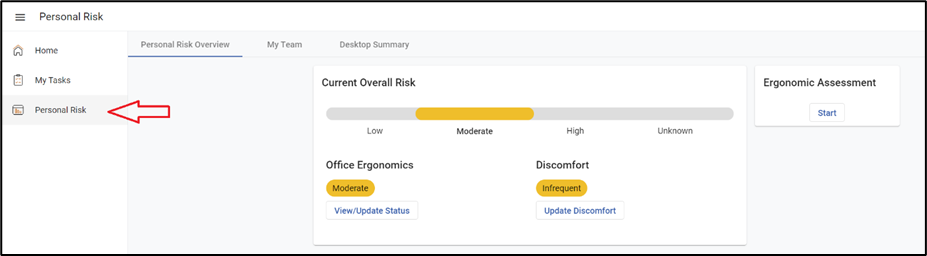

The Personal Risk module allows employees to take control of their own health and prevent repetitive strain injuries, musculoskeletal disorders, and other workplace injuries from happening. Comprehensive office ergonomics training gives employees the knowledge they need to prevent discomfort and injury while assessment tools allow employees to quickly identify potential ergonomic risks in their work area.
Ergonomists review the self-assessment results to monitor the overall risk calculations for individual employees for different risk types, and identify issues that require their assistance to resolve.
The Personal Risk Module has the following tabs:
You may also see a link to perform an ergonomic self-assessment, or you may have received an email invitation to take the training and assessment. Clicking on the link in the email will navigate you directly to the training in myCority.
